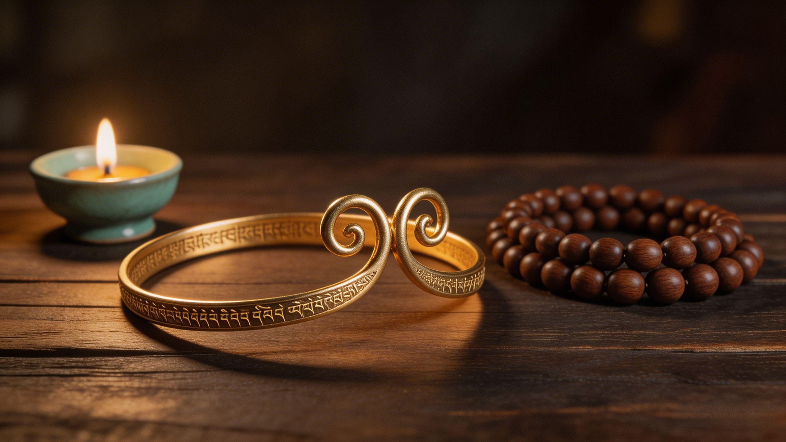
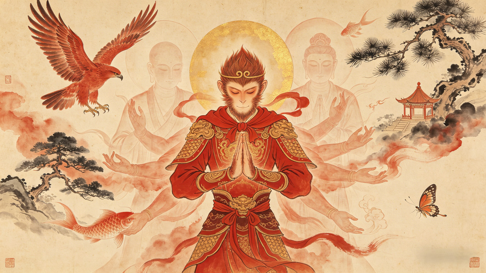
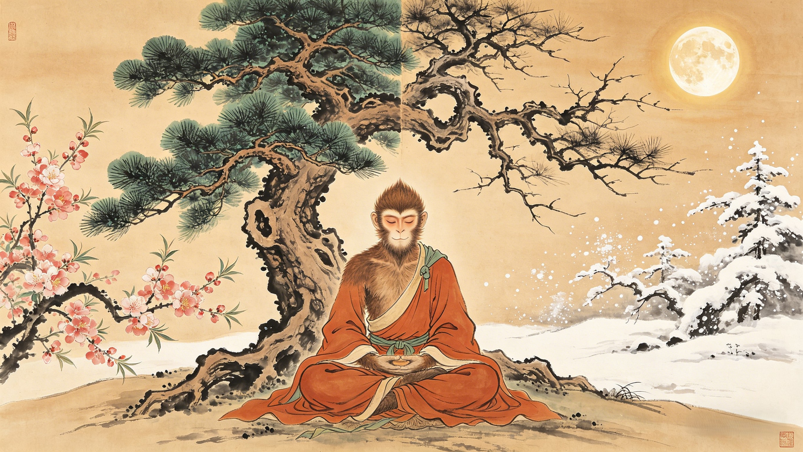

Divine Weapons and Powers

Ruyi Jingu Bang
如意金箍棒
The legendary staff that once held the ocean floor steady. Weighing 17,550 pounds, it obeys only Wukong — shrinking to the size of a needle or expanding to pierce the heavens. Engraved with golden bands at each end, it is the weapon that subdued dragons and shattered celestial armies.
Divine Iron
Somersault Cloud
筋斗云
A single somersault carries Wukong 108,000 li — one-third the circumference of the Earth. Conjured with a hand seal taught by Patriarch Subodhi, this nimbus cloud obeys thought itself. It can outrun the fastest immortals and slip between realms, making Wukong the most mobile warrior in creation.
Cloud Magic
Fiery Eyes, Golden Gaze
火眼金睛
Refined in the flames of Laozi's Eight Trigrams Furnace, this sight penetrates all illusion. Demons, spirits, and shape-shifters can hide nothing from Wukong's gaze — though smoke and soot left his eyes permanently sensitive, a flaw his enemies sometimes exploit. Still, no disguise evades him.
Divine Sight
The Tightening Fillet
紧箍咒
Not a weapon of Wukong's choosing, but the one that defined his redemption. Disguised as a golden headband by Guanyin, this magical band tightens with unbearable pain when Tripitaka chants the sutra. It is the leash on the untamable — a constant reminder that freedom without discipline is destruction.
Restraint
72 Earthly Transformations
七十二变
Taught by Patriarch Subodhi, this art allows Wukong to become anything — a bird, a fish, a temple, a tree, another person. Each strand of his hair can be transformed into a clone warrior. In a heartbeat, he can be anywhere as anyone. Mastery of form is mastery of the world itself.
Shape-Shifting
Layers of Immortality
万劫长生
Wukong stacks immortality like armor. He erased his name from the Book of Life and Death. He devoured the Peaches of Immortality. He drank celestial wine that grants eternal youth. He swallowed Laozi's pills of longevity. Then he survived the Eight Trigrams Furnace. Killing him isn't just difficult — it's cosmically redundant.
Eternal Life